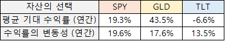
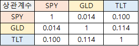

많은 사람들이 자산증식을 위해 증권시장에서 투자를 합니다.
각 개인은 기업가치와 기업정보를 분석하고 투자대상을 물색하여 합리적인 판단 하에 증권을 구매합니다.
하지만 선택한 증권의 가치가 아무리 유망하더라도 기대수익이 클 수록 위험이 따릅니다.
반대로, 리스크를 줄이면 줄일수록 기대수익은 점점 낮아집니다.
투자자는 주식에 투자해서 큰 리스크를 떠앉은 채 한 순간 큰 수익을 노리거나
채권과 금과 같이 안전자산에 투자해서 리스크를 줄이되, 예금, 적금에 준하는 소소한 수익을 버는
이 두 가지 방법 밖에 없을까요?
만일 위험자산과 안전자산을 반반 보유하면 어떻게 될까요?
중간 위험, 중간 수익이 될까요?
1952년, 해리 마코위츠(Harry Markowitz)는 연구논문 “Portfolio Selection”을 통해
현대 포트폴리오 이론(Modern Portfolio Theory, MPT)을 발표했습니다.
현대 포트폴리오 이론에선 위험자산과 안전자산 간 위험과 수익은 비선형 관계를 가짐을 입증하고
이를 효율적 프론티어로 불리는 그래프로 시각적으로 나타내었습니다.
이 페이지에선 현대 포트폴리오 이론의 효율적 프론티어를 직접 그려보고
수익과 위험의 두 목표의 비선형 관계를 확인하는 것이 목표입니다.
우선, 증권시장에 올라온 증권을 분석하기 위해 분석대상의 “Historical Stock Data”를 불러와야 합니다.
이번 예제에서는 아래의 3가지의 증권을 대상으로 분석을 수행합니다.
분석날짜는 현재로부터 대략 1년 **1 동안의 일일 종가 **2 를 불러왔습니다.
**1 ) 분석날짜 : 2024-09-16 ~ 2025-09-12
**2 ) 요즘 증권시장에서는 다양한 ETF가 출시되어 있으며 배당(분배금) 지급을 목적으로 하는 상품이 많습니다.
높은 배당을 지급하는 ETF의 경우 반드시 배당을 재투자함을 가정한 “수정종가(adjusted close)”를 이용하여 계산을 수행하여야 합니다.
각 주식(ETF)을 지난 1년간 보유했다고 가정했을 때 일일 평균 기대수익률(expected returns)을 계산합니다.
기대수익률은 아래와 같이 계산할 수 있습니다.
좀더 쉽게 풀어쓰면 아래와 같습니다.

이때 일일 평균 기대 수익률은 값이 미미하여 쉽게 와닿지 않으므로,
연간 평균 기대수익률로 변환하고자 할 때에는 아래 식과 같이 변환할 수 있습니다.
SPY : 0.070% / 1일 -> 19.33% / 1년
GLD : 0.143% / 1일 -> 43.50% / 1년
TLT : -0.027% / 1일 -> -6.60% / 1년
**1 ) 개장일 : ±252일 (주말,공휴일 제외)
각 주식(ETF)을 지난 1년간 보유했다고 가정했을 때 일일 수익률의 변동성(표준편차)**1을 계산합니다.
일일 수익률의 변동성(표준편차)은 아래와 같이 계산할 수 있습니다.
좀더 쉽게 풀어쓰면 아래와 같습니다.
이때 일일 수익률의 가격 변동성은 값이 미미하여 쉽게 와닿지 않으므로,
연간 수익률의 가격 변동성으로 변환하고자 할 때에는 아래 식과 같이 변환할 수 있습니다.
SPY : 2.612 / 1일 -> 19.60% / 1년
GLD : 2.318% / 1일 -> 17.57% / 1년
TLT : 1.107% / 1일 -> 13.50% / 1년
**1 ) 표준편차 : 측정된 각각의 데이터가 “평균”값으로부터 “평균적으로” 얼마나 떨어져 있는가(편차)를 설명하는 방법
공분산은 두 데이터간 상관관계를 정량적으로 계측하기 위한 수단입니다.
“Portfolio Selection”에서 나타낸 공분산 수식은 아래와 같습니다.
위 식을 일반적인 공분산 수식으로 풀어쓰면 아래와 같습니다.
본 예제에서는 둘 이상의 증권(SPY, GLD, TLT)을 대상으로 연산을 수행하므로
(그리고 이후에도 다수의 증권을 대상으로 계산할 예정이므로)
행렬 연산으로 표현하면 아래와 같습니다. (간단한 계산을 위해, 3일치의 종가를 대상으로 계산하는 경우)
공분산을 계산하는건 둘 이상의 데이터의 상관관계를 확인하기 위함입니다.
하지만 공분산의 결과만으로는 서로간의 연관성을 직관적으로 확인하기 어렵습니다.
따라서 공분산의 범위를 -1 ~ 1의 범위로 정규화(Normalizing)를 수행합니다.
이는 마치 서로간의 연관성이 70%인가 20%인가 처럼 백분율로 나타내는 것과 같습니다.
공분산 결과를 다시 불러옵니다.

공분산 행렬은 각각의 데이터간의 (공)분산으로 이루어져있습니다.
상관계수(Correlation)은 아래와 같이 구합니다.
같은 자산 간에는 상관계수가 1로 나타납니다. 예) SPY vs. SPY
서로 다른 자산간에는 상관계수가 아래와 같이 계산되었습니다. 예) SPY vs. GLD
상관계수 계산 과정에서, 분자로는 두 자산간의 함께 변화하는 정도((공)분산)를
분모로 두 자산의 표준편차의 곱(분산)로 나누었습니다.
이에 따라 상관계수는 -1~1사이의 값을 갖도록 정규화되었습니다.
1에 가까울 수록 서로 양의 상관관계를 가지며
-1에 가까울 수록 서로 음의 상관관계를 가지며
0에 가까울 수록 서로 어떠한 상관관계가 없음을 의미합니다.
자산간의 상관관계 계산결과, 각 자산간 상관성이 충분히 낮다고 판단됩니다.
SPY vs. GLD : 0.042 : 4.2%
SPY vs. TLT : 0.114 : 11.4%
GLD vs. TLT : -0.02 : -2%
** ) 공분산 계산 시 모집단을 대상으로 측정하는 경우 n으로 나누지만 표본집단(예제에서는 1년치의 데이터)을 대상으로 계산할 경우 n-1을 적용합니다.
**1 ) 둘 이상의 데이터를 대상으로 공분산을 계산할 경우, 공분산 행렬의 기호는 "Σ"" 가 사용됩니다.
**2 ) 각 자산의 분산과 같습니다. (계산 검산에 유용합니다.)
**3 ) 이 상관계수 값은 현재 예제에서 구한 3일치 공분산으로 구한 것이 아니라, 지난 1년간의 종가를 이용하여 구했습니다. (단 3일치의 공분산으로 상관계수를 계산하는 경우 터무니없는 값이 나오므로)
이전까지 수행한 분석 결과는 아래와 같습니다.
  상관계수 계산 결과, 이 자산들은 서로 간 연관성이 충분히 낮아, 최적의 자산 분배 비율을 탐색하는데에 적합합니다.
(상관계수가 높은 자산들로 보유하는 것은 위험을 분산하면서 수익률을 극대화 하는 방법을 찾기 어렵습니다.)
위험자산 중 하나인 SPY만 보유할 시, 연간 19.3% 기대 수익이 있고, 가격 변동성은 19.6% 입니다.
안전자산 중 하나인 TLT만 보유할 시, 연간 -6.6% 손실이 발생하고, 가격 변동성은 13.5% 입니다.
안전자산 중 하나인 GLD만 보유할 시, 연간 43.5% 기대 수익이 있고, 가격 변동성은 17.6%입니다.
직관적으로 보면, 단순히 금만 보유하는 것이 합리적인 것 같습니다.
이 자산들을 분산해서 보유하면 중간 기대 수익에 중간 가격 변동성(위험)일까요?
수 많은 경우의 수를, 수도 없이 고려해서 그 결과를 확인해보겠습니다.
몬테카를로 시뮬레이션은 주어진 문제에서 수행할 수 있는 경우 **1 를 경계조건 **2 내 에서 수 없이 변화해가며(랜덤) 진행해보았을 때
그에 따른 결과 **3 를 나열하여 의도된 결과 **3 를 이끌어내기 위한 인자 **1 를 추정하는 귀납적 추론 방식입니다.
한마디로, 수도 없이 많은 무작위 Case Study를 시도한다는 뜻입니다.
이번 문제에서는 총 2000개의 무작위 Case Study를 수행하였습니다.
몬테카를로 시뮬레이션 결과는 아래 그래프와 같습니다.
이 그래프는 “효율적 프론티어(Efficient Frontier)”라 불립니다.
이 결과를 보면 각각의 자산들을 단독보유 했을 때 보다, 좀 더 합리적인 구간이 보입니다. (초록색 실선)
이를 “파레토 세트(Pareto Set)”라고 부릅니다.
예를들어 SPY 단독보유 입장에서, 기대수익은 약 20%이고 변동성(위험)도 약 20%입니다.
하지만 자산 분배에 따라 기대수익은 동일하게 약 20%지만 변동성(위험)이 약 11%로 줄어드는 구간이 있습니다. (아래)
예를들어 TLT 단독보유 입장에서, 변동성(위험)은 약 13%이고, 수익률은 -6.6%로 이미 손실입니다.
하지만 자산 분배에 따라, 변동성(위험)은 약 13%로 유지한 채, 수익률은 약 33%로 증가하는 구간이 있습니다. (아래)
예를들어 GLD 단독보유 입장에서, 기대수익은 약 43%이고 변동성(위험)은 약 19%입니다.
GLD는 이미 파레토 세트에 걸쳐져 있으므로 GLD 단독보유도 합리적입니다.
하지만, 합리성을 유지한 채로 위험부담을 낮출 수 있는 다른 선택지(파레토 세트) 또한 보입니다. (아래)
여러 증권을 대상으로 분산투자를 하였을 때, 파레토 세트에 걸쳐져 있는 결과를 얻도록
자산 배분을 해야한다는 것을 알게되었습니다.
그렇다면 파레토 세트(초록색 실선) 중 어떤 선택을 해야 할까요
(파레토 세트는 주어진 조건에서 가장 최선의 선택의 집합이므로 이들 중 하나를 마음대로 선택하여도 무방합니다.)
(파레토 세트는 연속 집합이라 선택지가 무한개이므로 합리적인 하나의 선택지를 고르는 방법을 이어서 설명합니다.)
마코위츠는 합리적인 비율을 선택하기 위해선 기대수익률(E)를 최대화하고,
변동성(분산(V),표준편차)를 최소화 해야하는 E-V Rule를 제시하였습니다.
이는 절충(Trade-off)관계를 가지는 두 목적함수를 최적화하는 다목적최적화 문제로써,
E-V Rule은 “샤프지수” 최대화 문제로 발전합니다.
샤프지수는 아래와 같이 구할 수 있습니다.

샤프지수는 연간 1 위험당 기대할 수 있는 평균적인 연간 수익을 의미합니다.
즉, 샤프지수가 가장 높게 계산되는 자산 배분 비율을 찾아야 합니다.
그 비율을 찾기 전에, 기존에 수행했던 몬테카를로 시뮬레이션 (2000회의 랜덤 시뮬레이션) 결과에서
가장 높은 샤프지수를 가지는 결과를 찾아보았습니다.
탐색 결과, 569번째 Case에서 가장 높은 샤프지수(2.617)가 계산되었고 이때의 수익과 위험, 자산 분배 비율을 표시했습니다. (위)
분석 결과, TLT는 사실상 보유하지 않고, SPY : GLD = 25 : 75 로 보유했을 때, 샤프지수가 가장 높은것으로 나타났습니다. **1
몬테카를로 시뮬레이션 결과에서 샤프지수 최대 결과를 선택하는 것도 충분합니다.
하지만, 분석 대상의 증권 수가 많거나, 몬테카를로 시뮬레이션을 매번 수행하는 경우 부담이 될 수도 있습니다.
이러한 경우 아래의 최적화 정식화 문제를 푸는 방법으로 샤프지수 최대값을 구할 수 있습니다.
우선 파레토 세트를 구하기 위한 최적화 정식화는 아래와 같습니다.
이는 둘 이상의 목적함수를 가지는 다중목적 최적화 문제입니다.
다중목적 최적화 문제를 풀기위한 방법은 수도 없이 많습니다.
(가중치법(Weighting Method), ε 제한법(ε Constraint Method), STOM(Satisficing Trade-Off Method), 등)
이때, 파레토 세트 중 마코위츠가 제안했던 E-V Rule(샤프지수 최대화)를 만족하는 해를 찾기위한 정식화는 아래와 같습니다.
적절한 최적화 툴을 이용하여 최적화를 수행하고
아래의 표에 몬테카를로 시뮬레이션에서 선택한 해와 최적해를 비교했습니다.
두 방법 간 샤프지수 차이는 0.001로 큰 차이가 없어, 둘 중 사용하기 편한 방법으로 자산 분배 비율을 구하면 됩니다.
**1 ) 이 예제는 임의의 3가지 증권을 대상으로 단순히 지난 1년동안의 데이터로 분석한 결과입니다.
각각의 자산들을 단독보유 했을 때 보다, 자산 분배에 따라 좀 더 합리적인 구간이 보입니다. (초록색 실선)
이를 “파레토 세트(Pareto Set)”라고 부릅니다.
예를들어 SPY 단독보유 입장에서, 기대수익은 약 20%이고 변동성(위험)도 약 20%입니다.
하지만 자산 분배에 따라 기대수익은 동일하게 약 20%지만 변동성(위험)이 약 11%로 줄어드는 구간이 있습니다. (아래)
예를들어 TLT 단독보유 입장에서, 변동성(위험)은 약 13%이고, 수익률은 -6.6%로 이미 손실입니다.
하지만 자산 분배에 따라, 변동성(위험)은 약 13%로 유지한 채, 수익률은 약 33%로 증가하는 구간이 있습니다. (아래)
예를들어 GLD 단독보유 입장에서, 기대수익은 약 43%이고 변동성(위험)은 약 19%입니다.
GLD는 이미 파레토 세트에 걸쳐져 있으므로 GLD 단독보유도 합리적입니다.
하지만, 합리성을 유지한 채로 위험부담을 낮출 수 있는 다른 선택지(파레토 세트) 또한 보입니다. (아래)
여러 증권을 분산투자를 하였을 때, 파레토 세트에 걸쳐져 있는 결과를 얻도록
자산 배분을 해야한다는 것을 알게되었습니다.
마코위츠는 합리적인 비율을 선택하기 위해선 기대수익률(E)를 최대화하고,
변동성(분산(V),표준편차)를 최소화 해야하는 E-V Rule를 제시하였습니다. (샤프지수 최대화 문제)
샤프지수는 연간 1 위험당 기대할 수 있는 평균적인 연간 수익을 의미합니다.
즉, 샤프지수가 가장 높게 계산되는 자산 배분 비율을 찾아야 합니다.
본 예제 문제에서는 TLT는 사실상 보유하지 않고, SPY : GLD = 25 : 75 로 보유했을 때, 샤프지수가 가장 높은것으로 나타났습니다. **1
본 페이지 상단에서 소개한 "왜 주식과 채권을 6:4로 보유해야 하나요?" 물음의 대답은
말 그대로 주식과 채권을 6:4로 보유하라는 의미는 아니고
위험자산과 안전자산을 분배해서 보유하되, 최소한 파레토 세트 내에 걸쳐있는 분배 비율을 찾아서 보유하거나
샤프지수가 최대가 되는 분배 비율을 계산하여 보유해야 한다는 것입니다.
**1 ) 이 예제는 임의의 3가지 증권을 대상으로 단순히 지난 1년동안의 데이터로 분석한 결과입니다.